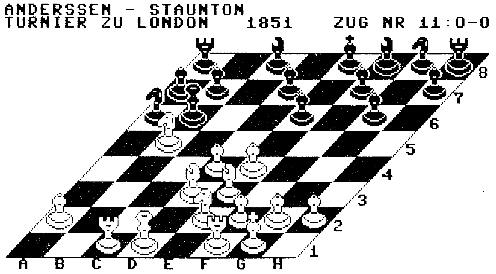

3D-Grafik für Schachspiele
Wollen Sie Ihrem Schachprogramm zu einer räumlichen Darstellung verhelfen oder wichtige Schachpartien speichern? Hier finden Sie wertvolle Routinen dafür.
Haben Sie sich schon häufig über die zweidimensionale Darstellung bei Schachspielen geärgert? Das Programm »Schachgrafik« (Listing) beendet diese Misere. Sie können damit ein perspektivisches Schachbrett erzeugen, wie es im Bild zu sehen ist.

Das Programm ist vollständig in Maschinensprache geschrieben und belegt den Speicherbereich $C000 bis $C9BE. Der Basic-Speicher bleibt auch bei eingeschalteter Grafik frei. Nachdem Sie das Programm mit dem MSE eingegeben haben, stehen Ihnen zwölf Routinen zur Verfügung, die mit dem SYS-Befehl aufgerufen werden können. Schachprogrammen wie »Schachmeister« (Ausgabe 11/84) oder »Schach dem C 64« (Ausgabe 8/85) verhelfen Sie mit diesem Programm zu einer hervorragenden Grafik.
So, nun zu den einzelnen Routinen, die Ihnen nach der Eingabe von »Schachgrafik« zur Verfügung stehen.
SYS 50000
Hiermit schalten Sie die Grafik ein. Weder die Bitmap wird gelöscht, noch werden die Farben der Grafik gesetzt. Die Bitmap liegt bei $E000, der Farbspeicher bei $CC00.
SYS 50003,FLAG
Schaltet die Grafik aus. Bei FLAG=0 geht der Computer in den Großschrift-Grafikmodus, bei FLAG=1 in den Kleinschrift-Großschrift-Modus.
SYS 50006
Löschen der Bitmap
SYS 50009,Byte
Setzen der Grafikfarben. Werte zwischen 0 und 255 können eingegeben werden. Das obere Nibble des Bytes bestimmt die Zeichen-, das untere die Hintergrundfarbe.
SYS 50012,FLAG
Zeichnen eines leeren Brettes. Bei FLAG=0 ist die untere linke Ecke in der Zeichen-, bei FLAG=1 in der Hintergrundfarbe gezeichnet.
SYS 50015,FIG,FELD
Dieser Befehl setzt die Figur mit dem Code FIG auf das Feld mit der Nummer FELD. Die Figurencodes:
| Farbe 1 | Farbe 2 | Bedeutung | |
|---|---|---|---|
| 0 | oder | 128 | :Leeres Feld |
| 1 | oder | 129 | :Bauer |
| 2 | oder | 130 | :Pferd |
| 3 | oder | 131 | :Läufer |
| 4 | oder | 132 | :Turm |
| 5 | oder | 133 | :Dame |
| 6 | oder | 134 | :König |
Alle weiteren Codes sind nicht erlaubt. Die Felder sind von 0 bis 63 durchnumeriert. Dabei liegt Feld 0 links oben.
SYS 50018,FELD
Zeichnet nur das Feld mit der Nummer FELD neu.
SYS 50021,FELDA,FELDB
Setzt die Figur auf FELDA nach FELDB und zeichnet beide Felder neu.
SYS 50024
Zeichnet alle Felder neu. Nach dem Laden der Schachgrafik ist das Schachbrett in der Anfangsstellung besetzt.
SYS 50027
Rotiert das Brett einmal gegen den Uhrzeigersinn. Hierbei werden auch synchron die Nummern der Felder geändert. Nach einmaligem Drehen befindet sich das Feld 0 links unten, nach zweimaligem Drehen rechts unten etc.
SYS 50030
Nach Ausführung dieses Befehls sind die Feldnummern wieder so, als sei das Brett bisher nicht gedreht worden. Feld Nr. 0 ist wieder links oben.
SYS 50033,TEXT,ZEILE,SPALTE
Gibt den TEXT an der durch ZEILE und SPALTE bestimmten Position in der Bitmap aus. Alle Zeichen erscheinen im Großschrift-Grafikmodus. Steuerzeichen werden als Leerzeichen interpretiert.
Es muß gelten: 0 <=ZEILE <=24 und 0 <=SPALTE <=39.
Bei allen Befehlen können alle zu übergebenden Werte in beliebigen Formen, zum Beispiel als Variablen, Formeln oder ähnliches auftauchen.
Leider schreibt bei einem RUN/STOP-RESTORE eine ROM-Routine (bei $FD15) 32 Bytes in die Bitmap, die man aber mit SYS 50033," ",23,14 löschen kann. Trotzdem sollte man RUN/STOP-RESTORE vermeiden oder sogar softwaremäßig unterbinden.
Liste aller Datensätze und Routinen
| $C000–$C29F | AND- und OR-Masken (je 48 Bytes) von Unterteil, Bauer, Pferd, Läufer, Turm, Dame und König. |
| $C2A0–$C2FF | 3*4-Grafikausschnitt Brett (als Hintergrund). |
| $C300–$C30F | 2 quadratische Grafikausschnitte, die in einer Routine benötigt werden. |
| $C310–$C34F | Speicher des Feldes |
| $C350–$C373 | Sprungtabelle zu den Hauptroutinen. |
| $C374–$C4FE | Die Hauptroutinen aller Befehle, Beginn der einzelnen Routinen siehe Sprungtabelle. |
| $C4FF–$C607 | Zeichnet Text in Bitmap. Leicht korrigiert übernommen von Heimo Ponnath, 64'er, 8/85. |
| $C608–$C62C | 4 Routinen, die prüfen, ob ein Feld am Rand des Brettes liegt. |
| $C62D–$C696 | Hier werden alle Teile des Brettes, die in keinem 3*4-Feldausschnitt enthalten sind, gezeichnet. |
| $C697–$C752 | überträgt 3*4-Brettausschnitt (der Feldnummer entsprechend modifiziert) in den Puffer. |
| $C753–$C76E | Rotiert einmal das gesamte Feld. |
| $C76F–$C7B1 | Errechnet Adresse eines Grafikausschnittes in der Bitmap abhängig von der Feldnummer. |
| $C7B2–$C7E2 | Überträgt Pufferinhalt in die Bitmap. |
| $C7E3–$C80F | Überträgt Figur eines Feldes in den Puffer. |
| $C810–$C847 | Überträgt unteren rechten Ausschnitt der Figur, die im Grafikausschnitt oben links auftaucht, in den Puffer. |
| $C848–$C87A | Überträgt unteren linken Ausschnitt der Figur, die im Grafikausschnitt oben rechts auftaucht, in den Puffer. |
| $C87B–$C8AD | Überträgt oberen rechten Ausschnitt der Figur, die im Grafikausschnitt unten links auftaucht, in den Puffer. |
| $C8AE–$C8E5 | Überträgt oberen linken Ausschnitt der Figur, die im Grafikausschnitt unten rechts auftaucht, in den Puffer. |
| $C8E6–$C8F9 | Rotiert eine im X-Register stehende Feldnummer ein- oder mehrmals gegen den Uhrzeigersinn. |
| $C8FA–$C914 | Verknüpft zwei Bytes aus zwei AND- bzw. OR-Masken mit dem Pufferinhalt. |
| $C915–$C923 | Adressen der Unterteilmasken. |
| $C924–$C949 | Ermittelt Adressen der Masken beliebiger Figuren und schreibt sie in zwei Zeiger. |
| $C94A–$C95C | Rotiert eine im X-Register stehende Feldnummer einmal gegen den Uhrzeigersinn. |
| $C95D–$C95E | Zwei Flags. |
| $C95F–$C9BE | Puffer. |
Auf der Leserservice-Diskette finden Sie zusätzlich ein Demonstrationsprogramm, das Ihnen alle Möglichkeiten von »Schachgrafik« aufzeigt.
(Frithof Dau/kn)